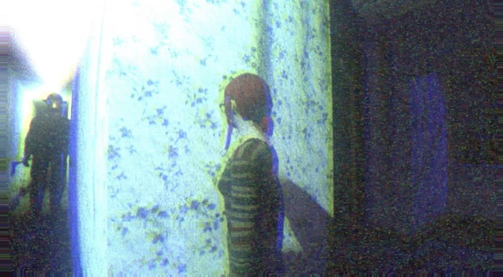
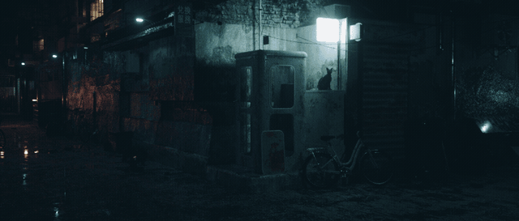
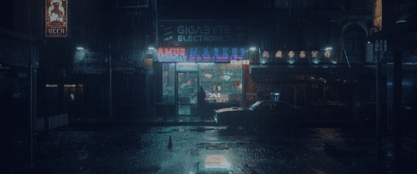

The Future Of Depths Curse
Studio Depths as a team as small as it may be right now, will keep working on perfecting our form of storytelling along with learning other forms of literuture. As CEO of this company, ill be working of the creative derector standpoint to ensure that we don't lose sight of the story ideas template...
What Is Our Work Based On?
all our works have been inspired by the art of the Gothic with American Gothic being a part of it. As i look through many different types of Gothic short stories from Poe, Jackson, Faulkner, Llewellyn, and Oates. each one of their short stories express the topic that takes my heart, its the puritanical morality/ respectability that is hiding dark, “gothic” desires; the hidden works that drive some people to do the things they do... Learn more...
The big Ten video game ideas
The Big Ten is the number of video game ideas that i've officially accepted as my company's main focus in development. there's many others that i thought were unfit for publishing or just overall boring to work on or make, some being Mannequin in the shadows (which was a weird dream i had), doubt, sorry, can't die, the glitched phenomenon and supplience. all those were works that differ form the genre i've been writing about but were never liked by me or won't be made into anything but skill testing code and unpublished projects.
“Human desire is what makes us who we are, without it what are we” - Studio Depths
This quote is the foundation of this Company idea of storytelling, as each of them follow a seemingly ordanary life thats tinted by hidden "Gothic" human desire and the greed of humanity. we see time and time again that greed and our desires is what helps us as humans, push forward to fight for what we want or care for but sometimes what we want could effect others or change ourselves in a good or evil way.
The Unknown Five
For the five of the unpublished and unoffical video game ideas, these are more then likely gonna be thrown away or used as way to practice for learning how to make games without working on the Big Ten and coding it when our skills in Video Game coding is still entry level. its likely that one of these ideas have a chance to be out of the Unknown Five and be a part of the Big Ten. Mannequin in the Shadows of all the Unknown ideas, ill likely to leave this list of Unknown because of its elements of being a Ps2 graphic horror game that gives the VHS aspect and the ability to have fixed room angle or third person
Mannequin in the Shadows - This image from a Puppet-Combo game is the art style that im going for because i think games like that with loud sounds and old looks are way more scary.

Depths Curse - This one is a special, it has multiple different genres in that built on Horror, The Gothic, human desire, psychological, drama, thriller, curses/hexs, Urban legends/mythology and the great beyond (H.P Lovecraft).

Corpse Celebration - this is hint to what his story will be about. its genre is different from the others, its built on action, horror, mystery and drama.

{kind=link}
{kind=link}
{kind=link}
Back to Top